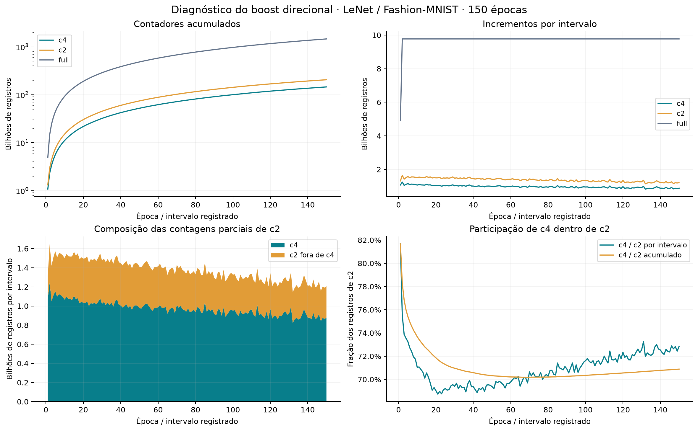
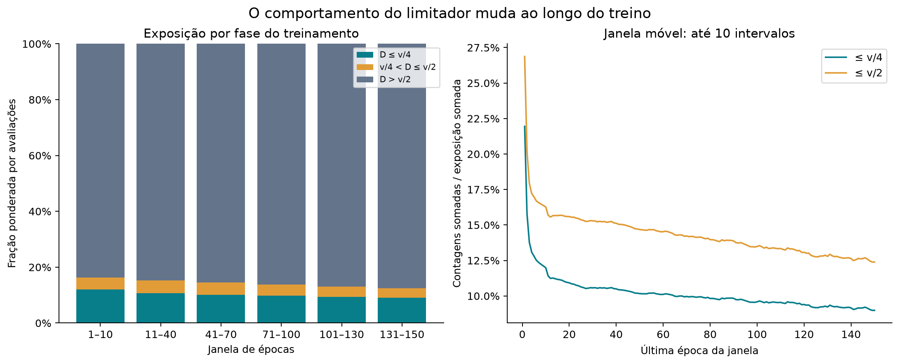
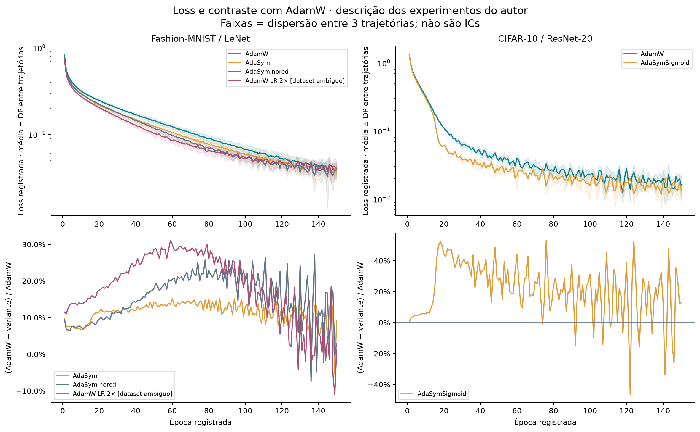
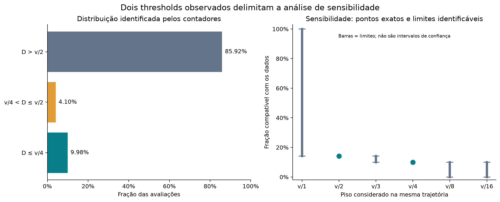
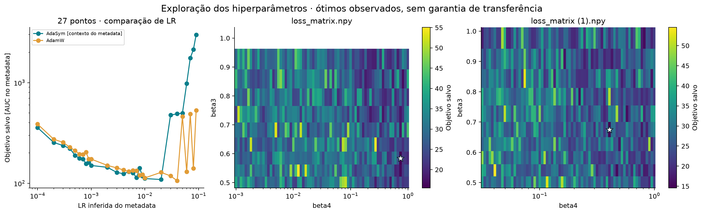

AdaSym — pesquisa experimental em otimização
English | Português (Brasil)
Pesquisa em algoritmos de otimização para machine learning, desenvolvida por Ítalo Capuzzo em um grupo de estudos de machine learning e IA. O projeto combina descoberta simbólica, experimentação com redes neurais e ciência de dados para investigar regras de atualização adaptativas.
A análise de curvas de loss, varreduras de hiperparâmetros e estatísticas internas do otimizador orienta a identificação de padrões e a revisão das hipóteses. Esse processo acompanha a evolução da fórmula do AdaSym, desde a expressão descoberta até a incorporação de memória direcional, limitação do boost e ponderação temporal.
Análise dos experimentos · Notebook de diagnóstico · Formulação · Busca simbólica no Kaggle
Ciência de dados: diagnóstico do boost e sensibilidade do threshold
O diagnóstico interno do AdaSym é um estudo central do projeto. A pergunta é como o boost direcional se distribui entre as faixas monitoradas e como esse comportamento muda durante o treinamento. A investigação utiliza os contadores AdaSym_fminist_c4, c2 e full, registrados em LeNet/Fashion-MNIST durante 150 épocas, com piso v/4.
Dados e tratamento
O mecanismo de consistência dos gradientes produz um boost por coordenada. full está associado ao boost integral limitado pelo threshold; c4 e c2 acompanham faixas de boost parcial relacionadas a v/4 e v/2, com c4 incluído em c2.
| Etapa da análise | Aplicação no diagnóstico |
|---|---|
| Organização e validação | Conferência dos formatos, contagens acumuladas e inclusão de c4 em c2 |
| Transformação temporal | Diferenças sucessivas para obter os incrementos de cada intervalo |
| Construção de medidas | Contagens por faixa, composição interna de c2 e agregação por fase |
| Análise exploratória | Comparação de séries acumuladas, incrementos e janelas móveis |
| Interpretação | Identificação de padrões temporais e relação com o mecanismo da fórmula |
Essa organização separa o crescimento natural das séries acumuladas das mudanças no comportamento do boost por intervalo.

Resultados e padrões identificados
Os registros acumulados de c2 são decompostos em duas partes: c4 e c2 fora de c4. Essa partição evita dupla contagem e permite estudar a composição das faixas de boost parcial.
Composição dos registros de c2 |
Contagem acumulada | Participação dentro de c2 |
|---|---|---|
c4 |
145.766.992.885 | 70,89% |
c2 fora de c4 |
59.869.969.114 | 29,11% |
A composição também muda ao longo do treinamento:
| Janela de épocas | Participação de c4 dentro de c2 |
|---|---|
| 1–10 | 73,67% |
| 11–40 | 69,54% |
| 41–70 | 69,63% |
| 71–100 | 70,75% |
| 101–130 | 71,85% |
| 131–150 | 72,52% |
O padrão apresenta uma redução inicial da participação de c4, seguida de recuperação nas fases posteriores. Portanto, o comportamento das faixas de boost parcial varia com a fase do treino. Um único percentual acumulado resume o experimento, mas a análise temporal revela a estrutura dessa mudança.

As proporções das janelas são calculadas pela razão entre as contagens somadas. A janela móvel examina até dez intervalos consecutivos, permitindo acompanhar a mudança de composição em uma escala temporal mais curta.
Diagnóstico interno e resultado do treinamento
A investigação combina as estatísticas internas com métricas das curvas de loss. A AUC normalizada descreve a curva inteira; a média das últimas 20 épocas descreve o comportamento tardio.
| Experimento | Método | AUC normalizada | Loss média nas últimas 20 épocas |
|---|---|---|---|
| LeNet / Fashion-MNIST | AdamW | 0,133193 | 0,043519 |
| LeNet / Fashion-MNIST | AdaSym | 0,118643 | 0,039634 |
| ResNet-20 / CIFAR-10 | AdamW | 0,077817 | 0,018017 |
| ResNet-20 / CIFAR-10 | AdaSymSigmoid | 0,065551 | 0,015440 |
Nas configurações apresentadas, as variantes AdaSym registram valores menores nos dois resumos. A leitura conjunta examina o funcionamento do mecanismo e o comportamento experimental do treinamento: os contadores descrevem as faixas de boost, enquanto as losses descrevem a trajetória de otimização.
Relação com a evolução da fórmula
A análise do boost integra o processo de investigação desenvolvido por Ítalo Capuzzo. O diagnóstico das faixas, sua evolução temporal e a comparação das curvas participam da identificação de padrões e da revisão das hipóteses sobre amplificação, memória direcional e ponderação temporal. A ciência de dados aparece, assim, como parte da metodologia usada para desenvolver e investigar a regra de atualização.
Notebook executado · Contadores por época · Composição por fase · Relatório completo
Regra de atualização
O AdaSym adapta o tamanho do passo à consistência recente dos gradientes em cada coordenada. Uma memória direcional persistente reduz o denominador da atualização, produzindo um boost element-wise. O piso relativo v/c limita essa amplificação.
| Componente | Função |
|---|---|
m1 |
Direção da atualização, obtida da memória dos gradientes |
v |
Escala de normalização baseada nos gradientes ao quadrado |
m2 |
Memória direcional usada na correção do denominador |
s |
Peso da correção; pode variar durante o treinamento |
c |
Controle do piso e da amplificação máxima |
eta |
Taxa de aprendizado |
Na variante AdaSymSigmoid, uma sigmoide reduz gradualmente a participação da correção direcional ao longo das épocas.
Análise de dados na evolução da fórmula
Os experimentos investigam tanto o resultado do treinamento quanto o funcionamento interno do otimizador. A comparação das curvas avalia a dinâmica de convergência; os contadores de boost examinam como a regra atua sobre as coordenadas; as varreduras estudam sua resposta aos hiperparâmetros.
| Etapa da formulação | Aspecto investigado |
|---|---|
| Expressão obtida por busca simbólica | Estruturas candidatas para a atualização |
| Memória ao quadrado no denominador | Relação entre memória direcional e escala dos gradientes |
Piso relativo v/c |
Controle da amplificação do passo |
Memória separada m2 |
Resposta da correção a seus próprios coeficientes |
| Peso temporal por sigmoide | Evolução da correção durante o treinamento |
Essa sequência representa um processo de investigação orientado por dados: observação de padrões, comparação de variantes e revisão da regra de atualização.
Experimentos e comparações
| Frente | Dados e análise |
|---|---|
| Comparação de otimizadores | AdaSym, AdaSymSigmoid e AdamW em Fashion-MNIST e CIFAR-10 |
| Dinâmica de treinamento | Curvas de loss, AUC normalizada e comportamento nas últimas épocas |
| Boost por coordenada | Séries acumuladas, incrementos e composição dos contadores |
| Sensibilidade aos hiperparâmetros | Learning rate, coeficientes de memória e transição da sigmoide |
| Descoberta simbólica | Evolução do fitness, tamanho das expressões e fórmulas selecionadas |

O relatório de análise reúne tabelas e interpretações. Os resultados são acompanhados por CSVs, figuras PNG/SVG e um manifesto com os hashes dos dados e os parâmetros da análise.
Descoberta simbólica
O notebook Symbolic Optimizer Discovery on MNIST via GP explora expressões construídas a partir do gradiente e de seus momentos, usando programação genética com DEAP e PyTorch.
- Seleção por torneio, cruzamento, mutação e elitismo.
- Avaliação de candidatos em LeNet/MNIST por loss de validação relativa a AdamW.
- Controle de complexidade e profundidade das expressões.
- Acompanhamento do fitness e das fórmulas selecionadas.
AdaSym: análise dos experimentos e diagnóstico do boost
Pesquisa experimental de Ítalo Capuzzo em algoritmos de otimização para machine learning.
A pesquisa combina descoberta simbólica, experimentação com redes neurais e análise de dados. Curvas de loss, varreduras de hiperparâmetros e contadores internos participam da identificação de padrões e da revisão das hipóteses sobre a regra de atualização.
1. Evolução da fórmula de atualização
A formulação evolui da expressão descoberta para uma regra com memória ao quadrado, piso relativo, memória direcional separada e peso temporal. A análise dos resultados acompanha esse desenvolvimento: investiga tanto o desempenho de treinamento quanto o mecanismo de amplificação por coordenada.
| Componente | Questão investigada |
|---|---|
| Memória direcional | Como a consistência recente dos gradientes participa do passo? |
| Piso v/c | Como limitar a amplificação produzida pela correção? |
| Coeficientes de m2 | Como a parametrização da memória afeta o objetivo? |
| Peso temporal | Como a participação da correção evolui durante o treinamento? |
2. Boost direcional e threshold
O AdaSym reduz o denominador da atualização de acordo com a memória de consistência dos gradientes. Esse mecanismo produz um boost element-wise, limitado pelo piso v/c. Na configuração examinada, o piso é v/4, com LeNet/Fashion-MNIST durante 150 épocas.
Os registros c4, c2 e full acompanham o mecanismo de boost. full está associado ao boost integral limitado pelo threshold; c4 e c2 acompanham faixas de boost parcial relacionadas a v/4 e v/2. c4 está incluído em c2.
Os registros são acumulados. Para examinar cada intervalo, utilizam-se diferenças sucessivas dos contadores. A composição de c2 é dividida em c4 e c2 fora de c4, evitando dupla contagem.
| Contador | Quantidade acumulada |
|---|---|
| c4 | 145,766,992,885 |
| c2 | 205,636,961,999 |
| c2 fora de c4 | 59,869,969,114 |
| full | 1,460,922,532,104 |
3. Composição e evolução temporal
Dentro dos registros de c2, c4 representa 70.89% e a faixa complementar representa 29.11%. Essas proporções descrevem a composição interna de c2.
| Janela de épocas | c4 | c2 | full | c4 dentro de c2 |
|---|---|---|---|---|
| 1–10 | 11,126,285,494 | 15,102,225,666 | 92,844,298,064 | 73.673% |
| 11–40 | 31,260,496,830 | 44,951,342,580 | 293,159,621,580 | 69.543% |
| 41–70 | 29,550,356,076 | 42,437,612,120 | 293,159,621,580 | 69.632% |
| 71–100 | 28,571,608,982 | 40,383,874,792 | 293,159,621,580 | 70.750% |
| 101–130 | 27,525,443,216 | 38,311,266,233 | 293,159,621,580 | 71.847% |
| 131–150 | 17,732,802,287 | 24,450,640,608 | 195,439,747,720 | 72.525% |
As janelas agregam as contagens antes de calcular a composição. As séries por intervalo e acumuladas permitem examinar a dinâmica do boost ao longo do treinamento. A janela móvel reúne até dez intervalos e descreve a evolução das faixas monitoradas.

4. Dinâmica da loss
As curvas são analisadas por trajetória e por grupo. A AUC normalizada utiliza a integral trapezoidal entre a primeira e a última posição registrada, dividida pelo comprimento desse intervalo. O resumo final considera as últimas 20 épocas.
| Grupo | Método | AUC normalizada | Loss média nas últimas 20 | DP temporal médio |
|---|---|---|---|---|
| Fashion-MNIST / LeNet | AdamW | 0.133193 | 0.043519 | 0.003417 |
| Fashion-MNIST / LeNet | AdaSym | 0.118643 | 0.039634 | 0.003163 |
| Fashion-MNIST / LeNet | AdaSym nored | 0.115411 | 0.039071 | 0.007535 |
| Fashion-MNIST / LeNet | Controle LR 2× | 0.107722 | 0.042096 | 0.005114 |
| CIFAR-10 / ResNet-20 | AdamW | 0.077817 | 0.018017 | 0.004495 |
| CIFAR-10 / ResNet-20 | AdaSymSigmoid | 0.065551 | 0.015440 | 0.004120 |
A leitura conjunta da curva inteira e do trecho final permite distinguir aceleração inicial, qualidade tardia e variação temporal. A dispersão entre trajetórias é apresentada nas faixas do gráfico, enquanto o DP temporal descreve a variação dentro da janela final de cada trajetória.
Os resultados para diferentes alvos e quantidades de épocas consecutivas estão em convergence_targets.csv. O arquivo preserva o resultado de cada trajetória; o registro de época permanece vazio quando o alvo não é atingido no horizonte observado.
5. Sensibilidade aos hiperparâmetros
As varreduras permitem examinar a resposta do objetivo à learning rate e aos coeficientes de memória. As tabelas mantêm cada configuração da grade, possibilitando análise além do ponto de mínimo.

6. Síntese da análise
Os dados conectam a evolução da fórmula ao diagnóstico do mecanismo e à comparação experimental. Os contadores mostram a dinâmica das faixas de boost; as curvas de loss descrevem o comportamento de treinamento; as varreduras mostram a resposta aos hiperparâmetros. A combinação dessas perspectivas caracteriza a ciência de dados como metodologia da pesquisa AdaSym.
Reprodução e tabelas
python -m pip install -e ".[plots,docs]"
python scripts/analyze_research.py
Os resultados incluem CSVs por época e trajetória, figuras PNG/SVG, manifesto com hashes dos dados e uma cópia HTML com figuras incorporadas. O notebook notebooks/threshold-diagnostics.ipynb apresenta o diagnóstico executável.
Análise de dados na pesquisa AdaSym
Pesquisa experimental de Ítalo Capuzzo em algoritmos de otimização para machine learning.
Formulação e evidência experimental
A investigação reúne descoberta simbólica, comparação de curvas de loss, exploração de hiperparâmetros e diagnóstico do boost element-wise. A análise dos padrões participa da evolução da regra de atualização: memória ao quadrado, piso relativo, memória direcional separada e ponderação temporal.
Diagnóstico do mecanismo de boost
Os registros c4/c2/full acompanham o treinamento de LeNet em Fashion-MNIST durante 150 épocas, com piso v/4. full está associado ao boost integral limitado pelo threshold. c4 e c2 acompanham faixas de boost parcial relacionadas a v/4 e v/2, com c4 incluído em c2.
As séries acumuladas são convertidas em incrementos por intervalo. A partição de c2 em c4 e c2 fora de c4 permite examinar sua composição sem dupla contagem. As janelas utilizam somas dos contadores antes do cálculo das proporções internas de c2.
Análise dos resultados
As curvas de loss são examinadas por trajetória e por grupo, incluindo AUC normalizada e comportamento no trecho final. As varreduras preservam o objetivo de cada configuração. Em conjunto, essas análises relacionam o funcionamento do otimizador ao comportamento experimental.
Materiais
O comando python scripts/analyze_research.py gera as tabelas, figuras e o relatório. O manifesto registra os hashes dos dados e os parâmetros utilizados.
Mapa dos experimentos
| Experimento | Registros | Configuração e análise |
|---|---|---|
| Fashion-MNIST | losses_FashionMNIST.npy | 100 épocas; AdaSym, AdaSymSigmoid e AdamW |
| Dinâmica em LeNet | AdamW_losses.npy, AdaSym_losses.npy, AdaSym_loss_fmnist_nored.npy | Três trajetórias de 150 épocas por arquivo |
| CIFAR-10 | AdamW_losses_cifar10.npy, AdaSymSig_losses_cifar10.npy | ResNet-20, 150 épocas |
| Controle de LR | Adam_losses2x.npy | LR 2×, 150 épocas |
| Memória | loss_matrix.npy, loss_matrix (1).npy | Duas grades de 10 × 70 pontos |
| Learning rate | lrs_aucloss.npy, lrs_aucloss_adamW.npy | Varreduras de 27 pontos |
| Learning rate de AdaSym | lrs_AdaSym_aucloss.npy | 80 registros do objetivo |
| Sigmoide | lim_aucloss.npy | 50 registros do objetivo |
| Boost por coordenada | AdaSym_fminist_c4.npy, AdaSym_fminist_c2.npy, AdaSym_fminist_full.npy | LeNet/Fashion-MNIST, 150 épocas, piso v/4; c4 incluído em c2 |
O relatório reúne o diagnóstico dos contadores, a dinâmica da loss e as varreduras. O esquema descreve os registros de boost.